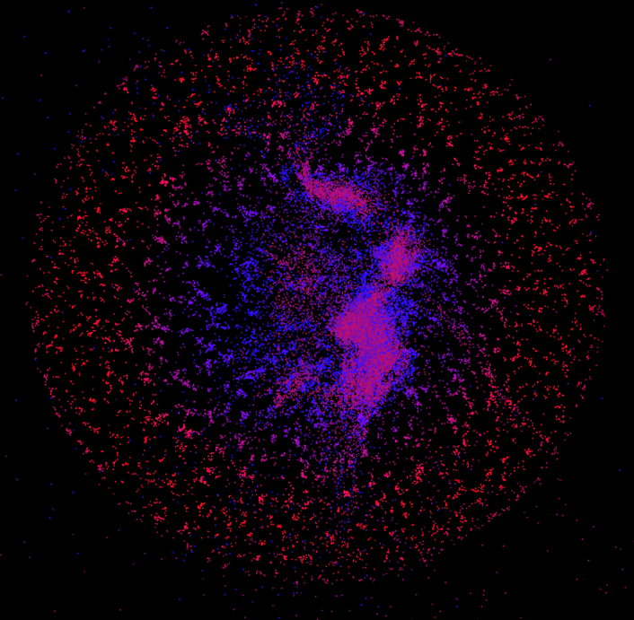
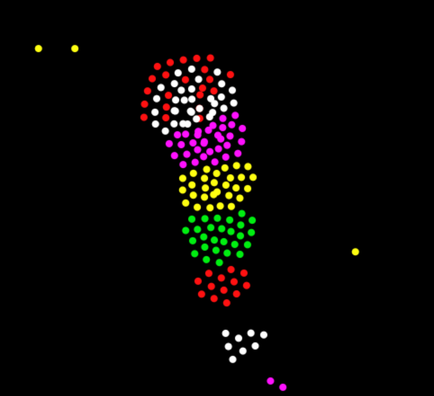
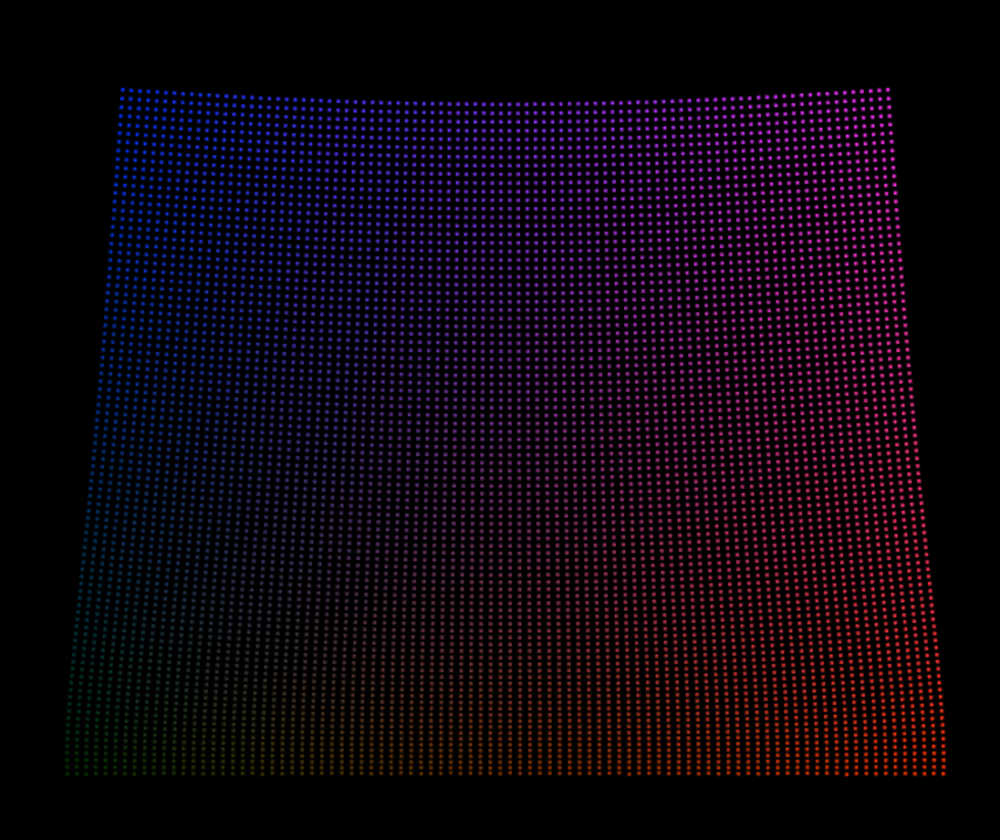
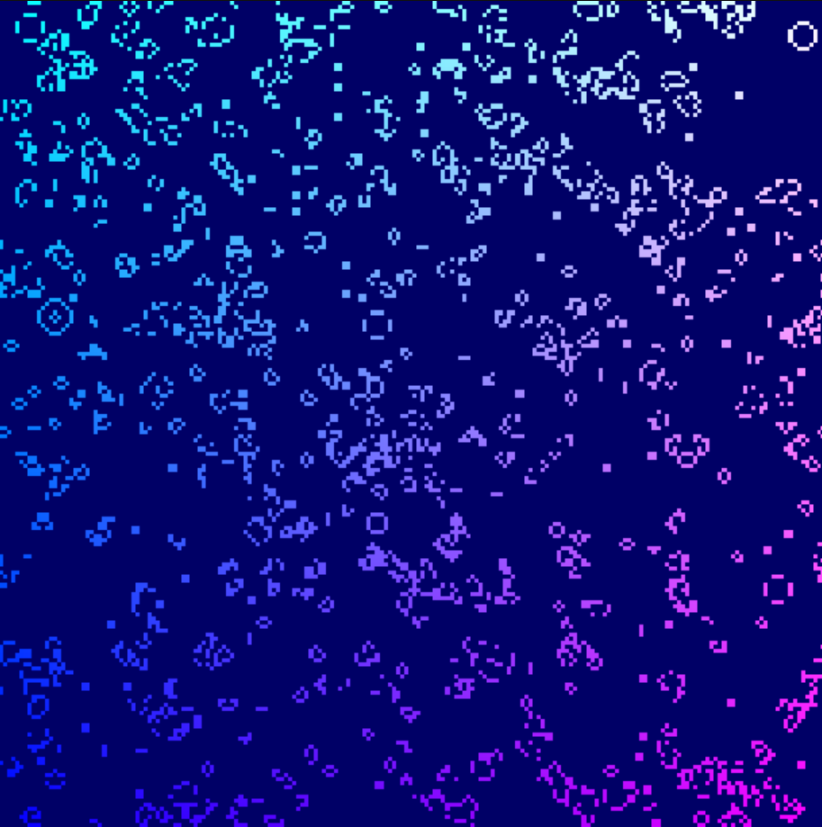
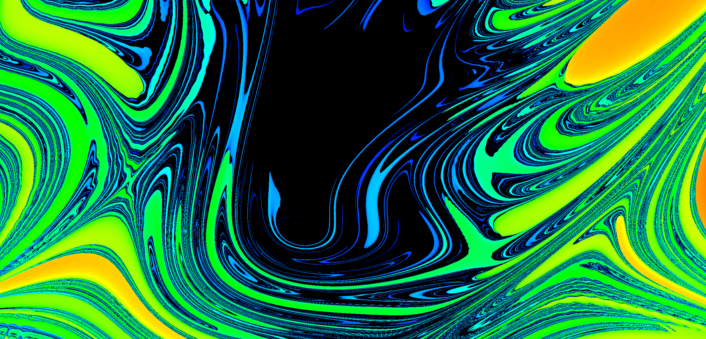

A variety of interactive simulations running on the GPU

This is a simulation of an arbitrary number of gravitational
bodies interacting with each other in interesting and chaotic ways. Here you will see a screenshot
of the simulation in action, simulating nearly 100,000 particles at once.
It works by sending particle data to the gpu through a texture buffer for parallel processing, which
is much faster than simply writing a for-loop to consecutively go through each
and calculate each particle interaction. So far, this is my most efficient "real-time" gravity simulation.

By following unique sets of mutual rules, the differently colored particles behave in very interesting ways. The behaviors that arise from this simple rules can be described as emergent life, creating cells and little creatures. Currently not GPU-bound.

A spring-mass model for a softbody (basically fancy jello).

John Conway's famous "Game of Life" implemented with WebGPU.
This one may not be supported for all browsers,
so I highly recommend checking out my other simulations until it is!
John Conway's Game of Life is not a game, but rather a concept developed by John Conway, an early computer scientist.
The idea is that each cell is either "alive" or "dead", and then each cell dies or revives based on the state of the cells around it.
If there are too many cells, it will die,
If there are not enough cells, it will die,
and if there are just the right number of cells around it, it will stay alive or come alive.
These rules are simple, but complex behaviors can arise from them. This is called "emergent life,"
and it is the main reason why this simple simulation is one of the most popularized
computer science concepts.

The double-pendulum fractal is a fractal based on the double-pendulum system. I developed this on my own circa February of 2023
after noticing that the chaotic nature of this physical system could realize some nice visualizations.
The main idea is to represent the initial state as a position in an image, and the final state as a color. Since an image has two dimensions,
it is natural to have one dimension be the initial angle of the first pendulum, while the second dimension is the initial position of the second pendulum.
However, you can represent any property of the initial state as an axis. I designed this website to allow you to do so with ease.
These properties include initial velocity, but also constants like the weights of the pendulums, their lengths, the gravity of the system as a whole,
friction, and even time. This allows a huge range of visualizations to be created.
The sliders adjust the values that aren't represented by the axes (e.g. if you had time on the x axis and initial position of pendulum 1 on the y axis,
then you would be responsible for setting every other variable).
The final color can also be determined by many different attributes of the final state, and I encourage you to play around with all the options available!